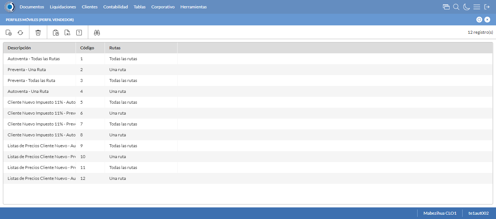

Desarrollado por : Area de Testing PWST
Fecha y hora de inicio : 2022-12-23 14:50:15
Duracion : 0:02:04.132480
Resultado : Total 8，Correctos 7 ，Errores 1 ，Taza de resultado 87.50%
Resumen 87.50% Errores 1 Fallidos 0 Correctos 7 Test realizados 8
| Caso de Prueba | Total | Correctos | Fallido | Error | Detalles | Captura del error |
| PerfilesMoviles.Test: Escenario 1 de Perfiles Moviles | 8 | 7 | 0 | 1 | Detalles | |
test |
ft1_1: 2022-12-23 14:50:16,877 - root - INFO - Se abre el chrome
2022-12-23 14:50:18,199 - root - INFO - Entra a la URL
2022-12-23 14:50:18,343 - root - INFO - Maximiza la pantalla
Traceback (most recent call last):
File "C:\Users\gerar\AppData\Local\Programs\Python\Python311\Lib\site-packages\selenium\webdriver\remote\switch_to.py", line 88, in frame
frame_reference = self._driver.find_element(By.ID, frame_reference)
^^^^^^^^^^^^^^^^^^^^^^^^^^^^^^^^^^^^^^^^^^^^^^^^^
File "C:\Users\gerar\AppData\Local\Programs\Python\Python311\Lib\site-packages\selenium\webdriver\remote\webdriver.py", line 861, in find_element
return self.execute(Command.FIND_ELEMENT, {"using": by, "value": value})["value"]
^^^^^^^^^^^^^^^^^^^^^^^^^^^^^^^^^^^^^^^^^^^^^^^^^^^^^^^^^^^^^^^^^
File "C:\Users\gerar\AppData\Local\Programs\Python\Python311\Lib\site-packages\selenium\webdriver\remote\webdriver.py", line 444, in execute
self.error_handler.check_response(response)
File "C:\Users\gerar\AppData\Local\Programs\Python\Python311\Lib\site-packages\selenium\webdriver\remote\errorhandler.py", line 249, in check_response
raise exception_class(message, screen, stacktrace)
selenium.common.exceptions.NoSuchElementException: Message: no such element: Unable to locate element: {"method":"css selector","selector":"[id="mainFrame"]"}
(Session info: chrome=108.0.5359.125)
Stacktrace:
Backtrace:
(No symbol) [0x0077F243]
(No symbol) [0x00707FD1]
(No symbol) [0x005FD04D]
(No symbol) [0x0062C0B0]
(No symbol) [0x0062C22B]
(No symbol) [0x0065E612]
(No symbol) [0x006485D4]
(No symbol) [0x0065C9EB]
(No symbol) [0x00648386]
(No symbol) [0x0062163C]
(No symbol) [0x0062269D]
GetHandleVerifier [0x00A19A22+2655074]
GetHandleVerifier [0x00A0CA24+2601828]
GetHandleVerifier [0x00828C0A+619850]
GetHandleVerifier [0x00827830+614768]
(No symbol) [0x007105FC]
(No symbol) [0x00715968]
(No symbol) [0x00715A55]
(No symbol) [0x0072051B]
BaseThreadInitThunk [0x76347D69+25]
RtlInitializeExceptionChain [0x7731BB9B+107]
RtlClearBits [0x7731BB1F+191]
During handling of the above exception, another exception occurred:
Traceback (most recent call last):
File "C:\Users\gerar\AppData\Local\Programs\Python\Python311\Lib\site-packages\selenium\webdriver\remote\switch_to.py", line 91, in frame
frame_reference = self._driver.find_element(By.NAME, frame_reference)
^^^^^^^^^^^^^^^^^^^^^^^^^^^^^^^^^^^^^^^^^^^^^^^^^^^
File "C:\Users\gerar\AppData\Local\Programs\Python\Python311\Lib\site-packages\selenium\webdriver\remote\webdriver.py", line 861, in find_element
return self.execute(Command.FIND_ELEMENT, {"using": by, "value": value})["value"]
^^^^^^^^^^^^^^^^^^^^^^^^^^^^^^^^^^^^^^^^^^^^^^^^^^^^^^^^^^^^^^^^^
File "C:\Users\gerar\AppData\Local\Programs\Python\Python311\Lib\site-packages\selenium\webdriver\remote\webdriver.py", line 444, in execute
self.error_handler.check_response(response)
File "C:\Users\gerar\AppData\Local\Programs\Python\Python311\Lib\site-packages\selenium\webdriver\remote\errorhandler.py", line 249, in check_response
raise exception_class(message, screen, stacktrace)
selenium.common.exceptions.NoSuchElementException: Message: no such element: Unable to locate element: {"method":"css selector","selector":"[name="mainFrame"]"}
(Session info: chrome=108.0.5359.125)
Stacktrace:
Backtrace:
(No symbol) [0x0077F243]
(No symbol) [0x00707FD1]
(No symbol) [0x005FD04D]
(No symbol) [0x0062C0B0]
(No symbol) [0x0062C22B]
(No symbol) [0x0065E612]
(No symbol) [0x006485D4]
(No symbol) [0x0065C9EB]
(No symbol) [0x00648386]
(No symbol) [0x0062163C]
(No symbol) [0x0062269D]
GetHandleVerifier [0x00A19A22+2655074]
GetHandleVerifier [0x00A0CA24+2601828]
GetHandleVerifier [0x00828C0A+619850]
GetHandleVerifier [0x00827830+614768]
(No symbol) [0x007105FC]
(No symbol) [0x00715968]
(No symbol) [0x00715A55]
(No symbol) [0x0072051B]
BaseThreadInitThunk [0x76347D69+25]
RtlInitializeExceptionChain [0x7731BB9B+107]
RtlClearBits [0x7731BB1F+191]
During handling of the above exception, another exception occurred:
Traceback (most recent call last):
File "C:\xampp\htdocs\versiones\automatizaciones\AutoPWST\01PM\testCase\PerfilesMoviles.py", line 30, in test
self.driver.switch_to.frame("mainFrame")
File "C:\Users\gerar\AppData\Local\Programs\Python\Python311\Lib\site-packages\selenium\webdriver\remote\switch_to.py", line 93, in frame
raise NoSuchFrameException(frame_reference)
selenium.common.exceptions.NoSuchFrameException: Message: mainFrame
|
|
||||
test_000: Ingresa a la base de datos |
pt1_2: 2022-12-23 14:50:21,442 - root - INFO - Escribe el usuario
2022-12-23 14:50:21,513 - root - INFO - Escribe la contraseña
2022-12-23 14:50:21,568 - root - INFO - Se dio clic en el boton ingresar
2022-12-23 14:50:22,809 - root - INFO - Ejecutar Enterprise
2022-12-23 14:50:26,844 - root - INFO - Cambia entre pestañas
|
|
||||
test_001: Abre menu y ejecuta pantalla |
pt1_3: 2022-12-23 14:50:30,776 - root - INFO - Abre la pantalla de Perfiles Moviles
2022-12-23 14:50:31,328 - root - INFO - La pantalla ejecutada es Perfiles Moviles
2022-12-23 14:50:31,328 - root - INFO - Captura: C:\xampp\htdocs\versiones\automatizaciones\AutoPWST\01PM\report\img screen：20221223_14_50_31.png
2022-12-23 14:50:31,516 - root - INFO - Se presiona el boton 'Nuevo', para crear un nuevo registro.
|
 | ||||
test_002: Abre la ventana de nuevo y crear un registro |
pt1_4: 2022-12-23 14:50:32,056 - root - INFO - Se abrio la pantalla para el ingreso de un registro nuevo.
2022-12-23 14:50:32,105 - root - INFO - Ingresa el codigo del nuevo registro
2022-12-23 14:50:32,200 - root - INFO - Ingresa la Descripcion del nuevo registro
2022-12-23 14:50:32,558 - root - INFO - Se selecciono la opción Todas las Rutas
2022-12-23 14:50:32,632 - root - INFO - Ingresa el Tipo documento default del nuevo registro
2022-12-23 14:50:32,973 - root - INFO - Se selecciono la opción Normal
2022-12-23 14:50:33,600 - root - INFO - Se selecciono el registro de Modo carga liquidación
2022-12-23 14:50:33,942 - root - INFO - Se selecciono la opción Documento (carga directa)
2022-12-23 14:50:33,998 - root - INFO - Se dió click en el checkbox Modo PDV
2022-12-23 14:50:34,050 - root - INFO - Se dió click en el checkbox Registrar coordenadas GPS
2022-12-23 14:50:34,401 - root - INFO - Se dió click en la opción No lo toma
2022-12-23 14:50:34,466 - root - INFO - Ingresa el Intervalo lectura coordenadas GPS(min) del nuevo registro
2022-12-23 14:50:34,466 - root - INFO - Captura: C:\xampp\htdocs\versiones\automatizaciones\AutoPWST\01PM\report\img screen：20221223_14_50_34.png
2022-12-23 14:50:36,658 - root - INFO - Se hace el cambio de pestaña Varios para continuar con el registro nuevo
2022-12-23 14:50:36,767 - root - INFO - Se dió click en el checkbox Cargar resumen de cuentas únicamente del vendedor de la ruta
2022-12-23 14:50:36,843 - root - INFO - Se dió click en el checkbox Verificar límite de crédito
2022-12-23 14:50:36,909 - root - INFO - Se dió click en el checkbox Verificar opción 'guardar como' del tipo de documento
2022-12-23 14:50:36,977 - root - INFO - Se dió click en el checkbox Permitir Pagos
2022-12-23 14:50:38,061 - root - INFO - Se dió click en el botón espacio para mover la pantalla hacía abajo
2022-12-23 14:50:39,413 - root - INFO - Se selecciono el registro de Disco de Datos
2022-12-23 14:50:40,064 - root - INFO - Se dió click en la opción Autoventa
2022-12-23 14:50:40,123 - root - INFO - Se dió click en el checkbox Enviar documentos de inmediato al servidor.
2022-12-23 14:50:40,179 - root - INFO - Se hace el cambio a la pestaña Permisos para continuar con el registro nuevo
2022-12-23 14:50:40,733 - root - INFO - Se presiona el boton 'Nuevo de la pestaña Permiso' , para crear un nuevo registro.
2022-12-23 14:50:42,145 - root - INFO - Se dió click en la opción Inihibir Georeferenciación
2022-12-23 14:50:42,198 - root - INFO - Se presiona el boton 'Guardar de la pestaña Permiso', para guardar el registro.
2022-12-23 14:50:42,503 - root - INFO - Se hace el cambio a la pestaña Lineas de Negocio para continuar con el registro nuevo
2022-12-23 14:50:43,072 - root - INFO - Se presiona el boton 'Nuevo de la pestaña Permiso' , para crear un nuevo registro.
2022-12-23 14:50:44,510 - root - INFO - Se selecciono el registro de Linea de negocio
2022-12-23 14:50:45,004 - root - INFO - Se presiona el boton 'Guardar de la pestaña Linea de Negocio', para guardar el registro.
2022-12-23 14:50:45,328 - root - INFO - Se presiona el boton 'Nuevo de la pestaña Permiso' , para crear un nuevo registro.
2022-12-23 14:50:46,792 - root - INFO - Se selecciono el registro de Linea de negocio
2022-12-23 14:50:47,344 - root - INFO - Se presiona el boton 'Guardar de la pestaña Linea de Negocio', para guardar el registro.
2022-12-23 14:50:47,679 - root - INFO - Se presiona el boton 'Nuevo de la pestaña Permiso' , para crear un nuevo registro.
2022-12-23 14:50:49,155 - root - INFO - Se selecciono el registro de Linea de negocio
2022-12-23 14:50:49,449 - root - INFO - Se presiona el boton 'Guardar de la pestaña Linea de Negocio', para guardar el registro.
2022-12-23 14:50:49,789 - root - INFO - Se hace el cambio a la pestaña Impulso Ventas para continuar con el registro nuevo
2022-12-23 14:50:50,362 - root - INFO - Se presiona el boton 'Nuevo de la pestaña Impulso de Ventas' , para crear un nuevo registro.
2022-12-23 14:50:50,934 - root - INFO - Ingresa el Articulo del nuevo registro
2022-12-23 14:50:53,082 - root - INFO - Se presiona el boton 'Guardar de la pestaña Impulso de Ventas', para guardar el registro.
2022-12-23 14:50:55,131 - root - INFO - Se presiona el boton 'Nuevo de la pestaña Impulso de Ventas' , para crear un nuevo registro.
2022-12-23 14:50:55,777 - root - INFO - Ingresa el Articulo del nuevo registro
2022-12-23 14:50:57,961 - root - INFO - Se presiona el boton 'Guardar de la pestaña Impulso de Ventas', para guardar el registro.
2022-12-23 14:51:00,075 - root - INFO - Se presiona el boton 'Nuevo de la pestaña Impulso de Ventas' , para crear un nuevo registro.
2022-12-23 14:51:00,724 - root - INFO - Ingresa el Articulo del nuevo registro
2022-12-23 14:51:02,877 - root - INFO - Se presiona el boton 'Guardar de la pestaña Impulso de Ventas', para guardar el registro.
2022-12-23 14:51:04,960 - root - INFO - Se presiona el boton 'Nuevo de la pestaña Impulso de Ventas' , para crear un nuevo registro.
2022-12-23 14:51:05,571 - root - INFO - Ingresa el Articulo del nuevo registro
2022-12-23 14:51:07,743 - root - INFO - Se presiona el boton 'Guardar de la pestaña Impulso de Ventas', para guardar el registro.
2022-12-23 14:51:09,837 - root - INFO - Se presiona el boton 'Nuevo de la pestaña Impulso de Ventas' , para crear un nuevo registro.
2022-12-23 14:51:10,480 - root - INFO - Ingresa el Articulo del nuevo registro
2022-12-23 14:51:12,721 - root - INFO - Se presiona el boton 'Guardar de la pestaña Impulso de Ventas', para guardar el registro.
2022-12-23 14:51:14,834 - root - INFO - Se hace el cambio a la pestaña Mantenimiento Clientes para continuar con el registro nuevo
2022-12-23 14:51:15,559 - root - INFO - Se dió click en el checkbox Permiso agregar nuevos clientes
2022-12-23 14:51:15,609 - root - INFO - Se dió click en el checkbox Permiso modificar clientes existentes
2022-12-23 14:51:16,598 - root - INFO - Se selecciono el registro de Ruta Referencia
2022-12-23 14:51:17,117 - root - INFO - Se dió click en el checkbox Clasificación 1
2022-12-23 14:51:17,325 - root - INFO - Se dió click en el checkbox Clasificación 2
2022-12-23 14:51:17,647 - root - INFO - Se dió click en el checkbox Clasificación 3
2022-12-23 14:51:18,138 - root - INFO - Se dió click en el checkbox Colonia
2022-12-23 14:51:19,084 - root - INFO - Se dió click en el checkbox Codigo Postal
2022-12-23 14:51:19,550 - root - INFO - Se dió click en el checkbox Direccion
2022-12-23 14:51:19,997 - root - INFO - Se dió click en el checkbox Entorno PDV
2022-12-23 14:51:20,477 - root - INFO - Se dió click en el checkbox Esquina 1
2022-12-23 14:51:21,586 - root - INFO - Se dió click en el checkbox Esquina 2
2022-12-23 14:51:22,068 - root - INFO - Se dió click en el checkbox Paises
2022-12-23 14:51:22,550 - root - INFO - Se dió click en el checkbox Departamento
2022-12-23 14:51:22,998 - root - INFO - Se dió click en el checkbox Localidad
2022-12-23 14:51:23,921 - root - INFO - Se da clic en el boton Guardar; se debe crear un nuevo registro.
|

|
||||
test_003: Repite el Registro |
pt1_5: 2022-12-23 14:51:24,464 - root - INFO - Se presiona el boton 'Refrescar', para crear un nuevo registro igual al anterior.
2022-12-23 14:51:26,536 - root - INFO - Se presiona el boton 'Nuevo', para crear un nuevo registro igual al anterior.
2022-12-23 14:51:27,629 - root - INFO - Se abrio la pantalla para el ingreso de un registro nuevo.
2022-12-23 14:51:27,696 - root - INFO - Ingresa el codigo del nuevo registro
2022-12-23 14:51:27,811 - root - INFO - Ingresa la Descripcion del nuevo registro
2022-12-23 14:51:28,180 - root - INFO - Se selecciono la opción Todas las Rutas
2022-12-23 14:51:28,303 - root - INFO - Ingresa el Tipo documento default del nuevo registro
2022-12-23 14:51:28,666 - root - INFO - Se selecciono la opción Normal
2022-12-23 14:51:29,234 - root - INFO - Se selecciono el registro de Modo carga liquidación
2022-12-23 14:51:29,662 - root - INFO - Se selecciono la opción Documento (carga directa)
2022-12-23 14:51:29,719 - root - INFO - Se dió click en el checkbox Modo PDV
2022-12-23 14:51:29,778 - root - INFO - Se dió click en el checkbox Registrar coordenadas GPS
2022-12-23 14:51:30,155 - root - INFO - Se dió click en la opción No lo toma
2022-12-23 14:51:30,270 - root - INFO - Ingresa el Intervalo lectura coordenadas GPS(min) del nuevo registro
2022-12-23 14:51:32,329 - root - INFO - Se da clic en el boton Guardar; NO se debe crear un nuevo registro.
2022-12-23 14:51:36,402 - root - INFO - Captura: C:\xampp\htdocs\versiones\automatizaciones\AutoPWST\01PM\report\img screen：20221223_14_51_36.png
2022-12-23 14:51:36,572 - root - INFO - Se presiona el boton 'Cerrar', para cerrar el mensaje de duplicidad de llave primaria
2022-12-23 14:51:37,019 - root - INFO - Se presiona el boton 'Cerrar', para cerrar la ventana
|
|||||
test_004: Modificar el registro |
pt1_6: 2022-12-23 14:51:37,215 - root - INFO - Se presiona el boton 'Refrescar', para proceder a modificar el registro.
2022-12-23 14:51:39,782 - root - INFO - Se da clic en el registro creado, para proceder a modificarlo.
2022-12-23 14:51:40,440 - root - INFO - Se modifica el contenido del campo Observaciones 1
2022-12-23 14:51:40,768 - root - INFO - Se selecciono la opción Una Ruta
2022-12-23 14:51:40,769 - root - INFO - Captura: C:\xampp\htdocs\versiones\automatizaciones\AutoPWST\01PM\report\img screen：20221223_14_51_40.png
2022-12-23 14:51:40,935 - root - INFO - Se hace el cambio de pestaña Permisos para continuar con la modificación del registro
2022-12-23 14:51:41,521 - root - INFO - Se presiona el boton 'Nuevo de la pestaña Permiso' , para crear un nuevo registro.
2022-12-23 14:51:42,422 - root - INFO - Se dió click en la opción Anular Documentos
2022-12-23 14:51:42,482 - root - INFO - Se presiona el boton 'Guardar de la pestaña Permiso', para guardar el registro.
2022-12-23 14:51:42,789 - root - INFO - Se hace el cambio a la pestaña Lineas de Negocio para continuar con la modificación del registro
2022-12-23 14:51:43,544 - root - INFO - Se hace el cambio de pestaña Impulso Ventas para continuar con la modificación del registro
2022-12-23 14:51:44,622 - root - INFO - Se da clic en el registro creado, para proceder a modificarlo.
2022-12-23 14:51:44,685 - root - INFO - Se presiona el boton 'Eliminar de Impulso Ventas', para eliminar el primer registro.
2022-12-23 14:51:46,256 - root - INFO - Se da clic en el registro creado, para proceder a modificarlo.
2022-12-23 14:51:46,303 - root - INFO - Se presiona el boton 'Eliminar de Impulso Ventas', para eliminar el segundo registro.
2022-12-23 14:51:47,864 - root - INFO - Se da clic en el registro creado, para proceder a modificarlo.
2022-12-23 14:51:47,896 - root - INFO - Se presiona el boton 'Eliminar de Impulso Ventas', para eliminar el tercer registro.
2022-12-23 14:51:49,486 - root - INFO - Se da clic en el registro creado, para proceder a modificarlo.
2022-12-23 14:51:49,530 - root - INFO - Se presiona el boton 'Eliminar de Impulso Ventas', para eliminar el cuarto registro.
2022-12-23 14:51:51,082 - root - INFO - Se da clic en el registro creado, para proceder a modificarlo.
2022-12-23 14:51:51,120 - root - INFO - Se presiona el boton 'Eliminar de Impulso Ventas', para eliminar el quinto registro.
2022-12-23 14:51:52,175 - root - INFO - Se da clic en el boton Guardar; se debe modificar la informacion del registro.
|

|
||||
test_005: Eliminar el registro creado |
pt1_7: 2022-12-23 14:51:52,801 - root - INFO - Se presiona el boton 'Refrescar', para proceder a eliminar el registro.
2022-12-23 14:51:55,380 - root - INFO - Se da clic en el registro creado, para proceder a eliminarlo.
2022-12-23 14:51:55,954 - root - INFO - Se hace el cambio de pestaña Permisos para continuar con la eliminación del registro
2022-12-23 14:51:57,054 - root - INFO - Se da clic en el primer registro de Permisos, para proceder a eliminarlo.
2022-12-23 14:51:57,116 - root - INFO - Se presiona el boton 'Eliminar de Permiso', para eliminar el segundo registro.
2022-12-23 14:51:58,697 - root - INFO - Se da clic en el segundo registro de Permisos, para proceder a Eliminarlo.
2022-12-23 14:51:58,736 - root - INFO - Se presiona el boton 'Eliminar de Permiso', para eliminar el segundo registro.
2022-12-23 14:51:59,787 - root - INFO - Se hace el cambio a la pestaña Lineas de Negocio para continuar con la eliminación del registro
2022-12-23 14:52:00,874 - root - INFO - Se da clic en el primer registro de Linea de Negocio, para proceder a Eliminarlo.
2022-12-23 14:52:00,917 - root - INFO - Se presiona el boton 'Eliminar de Linea de Negocio', para eliminar el primer registro.
2022-12-23 14:52:02,482 - root - INFO - Se da clic en el segundo registro Linea de negocio, para proceder a Eliminarlo.
2022-12-23 14:52:02,520 - root - INFO - Se presiona el boton 'Eliminar de Linea de Negocio', para eliminar el segundo registro.
2022-12-23 14:52:04,078 - root - INFO - Se da clic en el tercer registro Lineas de Negocio, para proceder a Eliminarlo.
2022-12-23 14:52:04,118 - root - INFO - Se presiona el boton 'Eliminar de Linea de Negocio', para eliminar el tercer registro.
2022-12-23 14:52:05,176 - root - INFO - Se hace el cambio a la pestaña Mantenimiento Clientes para continuar con la eliminación del registro
2022-12-23 14:52:05,749 - root - INFO - Se dió click en el checkbox Clasificación 1
2022-12-23 14:52:06,091 - root - INFO - Se dió click en el checkbox Clasificación 2
2022-12-23 14:52:06,369 - root - INFO - Se dió click en el checkbox Clasificación 3
2022-12-23 14:52:06,825 - root - INFO - Se dió click en el checkbox Colonia
2022-12-23 14:52:07,265 - root - INFO - Se dió click en el checkbox Codigo Postal
2022-12-23 14:52:07,765 - root - INFO - Se dió click en el checkbox Direccion
2022-12-23 14:52:08,205 - root - INFO - Se dió click en el checkbox Entorno PDV
2022-12-23 14:52:08,430 - root - INFO - Se dió click en el checkbox Esquina 1
2022-12-23 14:52:08,692 - root - INFO - Se dió click en el checkbox Esquina 2
2022-12-23 14:52:09,080 - root - INFO - Se dió click en el checkbox Paises
2022-12-23 14:52:09,431 - root - INFO - Se dió click en el checkbox Departamento
2022-12-23 14:52:09,728 - root - INFO - Se dió click en el checkbox Localidad
2022-12-23 14:52:10,198 - root - INFO - Se da clic en el boton Guardar; se debe modificar la informacion del registro.
2022-12-23 14:52:10,792 - root - INFO - Se da clic en el registro creado, para proceder a eliminarlo.
2022-12-23 14:52:11,100 - root - INFO - Se presiona el boton 'Eliminar', para eliminar el registro.
2022-12-23 14:52:13,101 - root - INFO - Captura: C:\xampp\htdocs\versiones\automatizaciones\AutoPWST\01PM\report\img screen：20221223_14_52_13.png
2022-12-23 14:52:13,252 - root - INFO - Se confirma el eliminado del registro
2022-12-23 14:52:13,498 - root - INFO - Se presiona el boton 'Refrescar', para verificar si el registro ha sido eliminado.
2022-12-23 14:52:15,552 - root - INFO - Se presiona el boton 'Cerrar', para cerrar la pantalla de Perfiles Moviles.
|
|||||
test_006: Cerrar_Navegador |
pt1_8: 2022-12-23 14:52:19,866 - root - INFO - Se cierra chrome
|
|
||||
| Caso de prueba | 8 | 7 | 0 | 1 | Taza de resultado：87.50% | |